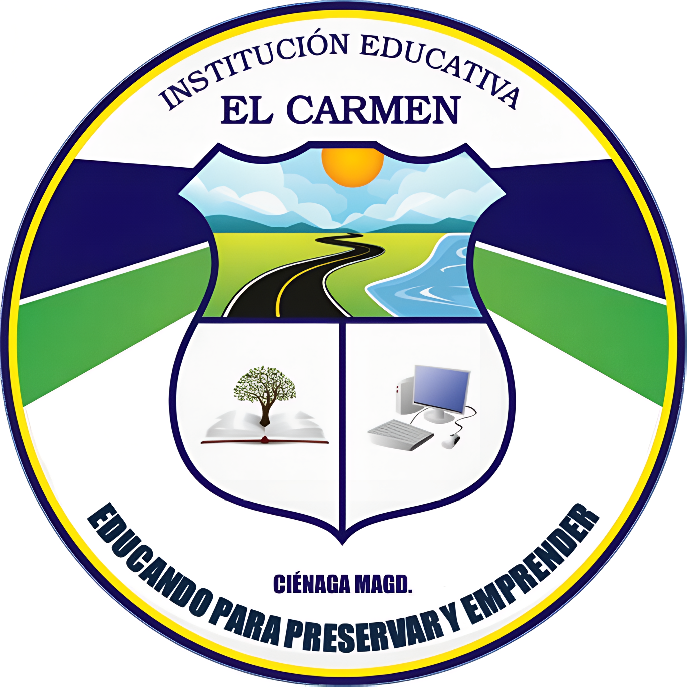

Preescolar
Los primeros aprendizajes para descubrir el mundo y crecer en comunidad.

Ciénaga, Magdalena · DANE 147189001160
Una formación integral para preservar nuestro entorno y construir proyectos de vida.
Conocer la ruta de admisión ↓Los primeros aprendizajes para descubrir el mundo y crecer en comunidad.
Primaria y secundaria para desarrollar conocimientos, habilidades y valores.
Formación para continuar aprendiendo y construir un proyecto de vida.
Esta propuesta no anuncia inscripciones abiertas. Fechas, cupos y requisitos deben confirmarse con la institución.
Comunícate con la institución e indica el nivel educativo de tu interés.
Solicita el calendario vigente, la disponibilidad y la lista oficial de documentos.
Sigue las indicaciones institucionales para entregar documentos y completar el proceso.
Este portal es una demostración. Consulta directamente con la institución las fechas y los cupos disponibles.
Solicita la lista oficial correspondiente al grado y a tu situación. No envíes documentos personales a través de esta demostración.
Por ahora ofrecemos orientación. Esta demostración no registra solicitudes ni almacena información de estudiantes o acudientes.